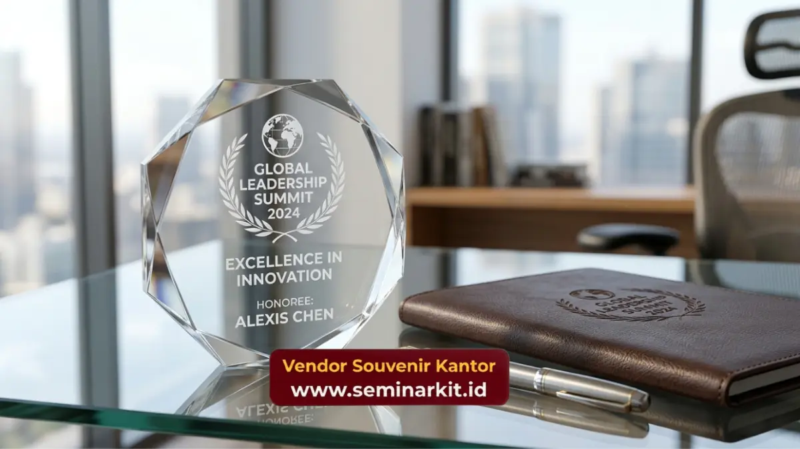

Souvenir corporate adalah barang bermerek logo perusahaan yang dibagikan kepada klien, karyawan, atau mitra bisnis sebagai bentuk apresiasi sekaligus media branding.
Souvenir corporate berfungsi memperkuat citra profesional, mempererat relasi bisnis, dan menjaga perusahaan tetap diingat penerimanya. Kebutuhan ini kini dapat dipenuhi secara custom melalui vendorsouvenirkantor.web.id.
- Souvenir corporate mencakup barang fungsional seperti tumbler, tas, alat tulis, hingga produk premium seperti gift set eksekutif.
- Custom logo pada souvenir corporate meningkatkan brand recall dan kesan profesional di mata klien maupun mitra.
- Pemilihan material dan desain menentukan daya tahan serta kesan mewah souvenir.
- Souvenir corporate dapat disesuaikan dengan budget, jumlah pemesanan, dan momen tertentu seperti akhir tahun atau MoU.
- vendorsouvenirkantor.web.id menyediakan layanan custom souvenir corporate dari desain hingga produksi.
Apa Itu Souvenir Corporate?
Souvenir corporate adalah barang bermerek logo perusahaan yang diproduksi khusus untuk dibagikan pada acara bisnis, penyambutan karyawan baru, atau apresiasi klien.
Souvenir corporate berbeda dari souvenir umum karena dirancang mengikuti identitas visual perusahaan, mulai dari warna, logo, hingga tagline.
Souvenir corporate umumnya diproduksi dalam jumlah besar (bulk order) untuk efisiensi biaya per unit.
Perusahaan biasanya memesan souvenir corporate untuk kebutuhan seperti gathering tahunan, seminar, pameran, hingga hadiah retensi karyawan senior.
Mengapa Souvenir Corporate Penting bagi Perusahaan?
Souvenir corporate penting karena berfungsi sebagai representasi fisik dari identitas dan nilai perusahaan di hadapan pihak eksternal maupun internal. Barang bermerek yang berkualitas menciptakan kesan pertama yang positif dan bertahan lama.
Selain itu, souvenir corporate membantu perusahaan menonjol di tengah kompetisi bisnis. Klien yang menerima souvenir premium cenderung menilai perusahaan pemberi sebagai entitas yang profesional, detail-oriented, dan menghargai relasi jangka panjang.
Apa Saja Jenis Souvenir Corporate yang Populer?
Jenis souvenir corporate yang populer mencakup kategori fungsional harian, kategori premium eksekutif, dan kategori tematik sesuai acara. Setiap kategori memiliki tujuan penggunaan berbeda.
Kategori fungsional harian mencakup tumbler, notebook, flashdisk, dan tas laptop yang digunakan penerima secara rutin sehingga logo perusahaan terekspos berulang kali.
Kategori premium eksekutif meliputi gift set berbahan kulit, jam meja, hingga pena eksekutif yang cocok untuk klien VIP atau mitra strategis.
Kategori tematik biasanya disesuaikan dengan momen tertentu seperti akhir tahun, penandatanganan kontrak, atau perayaan ulang tahun perusahaan.

Bagaimana Memilih Jenis Souvenir Corporate Sesuai Tujuan?
Pemilihan jenis souvenir corporate sebaiknya disesuaikan dengan target penerima dan tujuan pemberian.
Untuk klien strategis, souvenir premium dengan kemasan eksklusif lebih tepat digunakan. Untuk karyawan atau peserta acara massal, souvenir fungsional dengan harga per unit lebih efisien menjadi pilihan rasional.
Faktor lain yang perlu dipertimbangkan adalah daya tahan produk, relevansi dengan bidang usaha perusahaan, serta kemudahan mencetak logo pada material yang dipilih.
Apa Manfaat Souvenir Corporate bagi Bisnis?
Souvenir corporate memberikan manfaat berupa peningkatan brand awareness, penguatan loyalitas relasi bisnis, dan efisiensi biaya pemasaran dibandingkan media iklan konvensional.
Manfaat ini bersifat jangka panjang karena souvenir fisik terus digunakan penerima dalam aktivitas sehari-hari.
Bagaimana Souvenir Corporate Memperkuat Hubungan dengan Klien?
Souvenir corporate memperkuat hubungan klien dengan menghadirkan sentuhan personal di luar transaksi bisnis formal.
Pemberian souvenir pada momen tertentu, seperti perpanjangan kontrak atau kunjungan kerja, menunjukkan apresiasi perusahaan terhadap kerja sama yang terjalin.
Hal ini secara tidak langsung membangun rasa dihargai pada klien, yang berdampak positif terhadap keberlanjutan kerja sama di masa mendatang.
Bagaimana Cara Memesan Souvenir Corporate Custom Logo?
Cara memesan souvenir corporate custom logo umumnya dimulai dari konsultasi kebutuhan, pemilihan produk dan material, proses desain logo, hingga produksi dan pengiriman. Proses ini dapat disesuaikan dengan tenggat waktu acara perusahaan.
Perusahaan yang ingin memesan souvenir corporate biasanya perlu menyiapkan file logo, menentukan jumlah pemesanan, serta budget yang tersedia agar vendor dapat memberikan rekomendasi produk yang paling sesuai.
Apa Saja Kesalahan Umum dalam Memesan Souvenir Corporate?
Kesalahan umum dalam memesan souvenir corporate meliputi pemesanan mendadak tanpa memperhitungkan waktu produksi, pemilihan material yang tidak sesuai musim atau kebutuhan penggunaan, serta minimnya pengecekan kualitas sebelum produksi massal.
Kesalahan lain yang sering terjadi adalah kurang memperhatikan keterbacaan logo pada ukuran produk kecil, sehingga identitas merek menjadi kurang jelas saat dicetak.
Tips Memastikan Souvenir Corporate Tampil Profesional
Tips memastikan souvenir corporate tampil profesional meliputi konsistensi warna brand, kualitas cetak logo yang presisi, serta pemilihan kemasan yang mendukung kesan eksklusif produk.
Kemasan turut memegang peran penting karena menjadi elemen pertama yang dilihat penerima sebelum membuka produk.
Kemasan yang rapi dan bernuansa korporat akan memperkuat kesan premium dari souvenir tersebut.
Jika perusahaan Anda membutuhkan souvenir corporate dengan kualitas premium dan proses custom logo yang mudah, tim vendorsouvenirkantor.web.id siap membantu mewujudkan kebutuhan branding perusahaan Anda dari konsultasi hingga pengiriman.
Souvenir corporate merupakan instrumen branding strategis yang memperkuat citra perusahaan sekaligus mempererat relasi dengan klien dan karyawan.
Pemilihan jenis produk, kualitas material, dan proses custom logo yang tepat menentukan efektivitas souvenir tersebut sebagai media branding jangka panjang.
Untuk kebutuhan souvenir corporate custom logo dengan kualitas premium, kunjungi vendorsouvenirkantor.web.id dan konsultasikan kebutuhan perusahaan Anda sekarang.

Banner promosi: klik gambar untuk langsung terhubung ke WhatsApp tim sales.